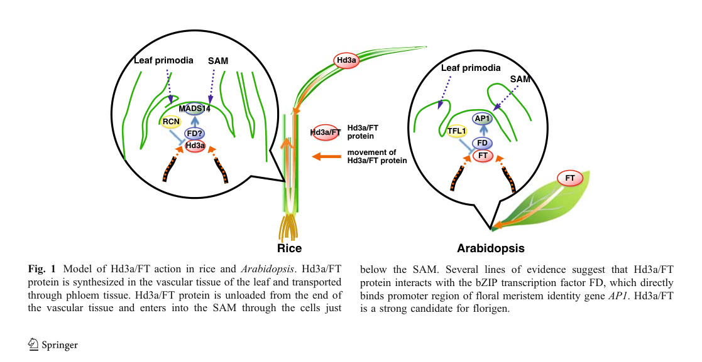
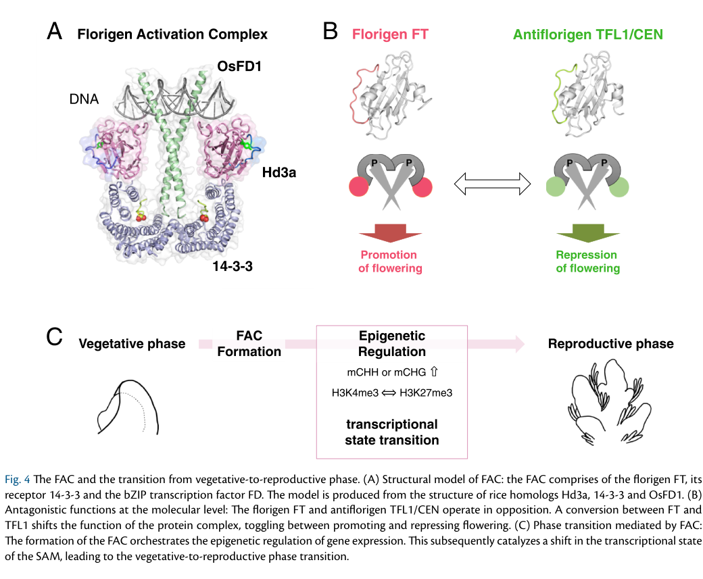

HD3A (Heading date 3a; UniProt Q93WI9; Os06g0157700 / LOC_Os06g06320) is the rice florigen - the long-sought mobile flowering signal - and is the rice ortholog of Arabidopsis FLOWERING LOCUS T (FT). It is a small (179 aa) member of the phosphatidylethanolamine-binding protein (PEBP) family, FT-like subgroup. Hd3a is NOT an enzyme or transporter; its molecular mode of action is protein-protein interaction. Hd3a transcription is concentrated in leaf-blade vascular tissue, and the Hd3a protein is loaded into the phloem, transported long-distance to the shoot apical meristem (SAM), unloaded near the vascular termini, and enters SAM cells, where it triggers the vegetative-to-reproductive (floral) transition (Tamaki et al. 2007, PMID:17446351; deep-research falcon report). In SAM cells Hd3a first forms a cytoplasmic Hd3a-14-3-3 (GF14 family) subcomplex that becomes nuclear upon co-expression of the bZIP transcription factor OsFD1, assembling the "florigen activation complex" (FAC) that activates downstream floral-identity MADS-box genes (OsMADS14, OsMADS15). Hd3a acts downstream of the photoperiod regulators Hd1 and Ehd1 and promotes flowering specifically under inductive short-day conditions (Kojima et al. 2002, PMID:12407188). Functional perturbation produces large flowering-time phenotypes: Hd3a RNAi delays flowering by >30 days, and double suppression of Hd3a and RFT1 (the partly redundant second rice florigen) can prevent flowering for up to 300 days. The genuine core of Hd3a is therefore a florigenic, phloem-mobile, FAC-forming POSITIVE REGULATOR OF THE FLORAL TRANSITION (flowering time), not a differentiation factor and not an executor of flower-organ morphogenesis. Two retired SwissProt-keyword (GO_REF:0000043) annotations - "cell differentiation" (GO:0030154) and "flower development" (GO:0009908) - are over-annotations of this "timing signal != bare developmental process" type and are reviewed below.
Definition: The activity of a mobile FT-family flowering signal that promotes the floral transition by forming a transcriptional activation complex (with 14-3-3 receptors and FD/OsFD1) at the shoot apical meristem. There is currently no GO molecular-function term capturing this activity; Hd3a (and Arabidopsis FT) would be the canonical bearers of such a term. In its absence, Hd3a's molecular action is best approximated by 14-3-3 protein binding and its biological role by the floral-transition/timing process terms.
Justification: The PEBP-family namesake MF "phosphatidylethanolamine binding" (GO:0008429) is a misleading family-level inference with no demonstrated biological relevance for FT-like florigens, whose real molecular action is protein-protein interaction within the florigen activation complex.
Supporting Evidence:
| GO Term | Evidence | Action | Reason |
|---|---|---|---|
|
GO:0030154
cell differentiation
|
IEA
GO_REF:0000043 |
REMOVE |
Summary: SPKW (GO_REF:0000043) annotation derived from the UniProt keyword "Differentiation"; snapshot-only, removed in the current GOA release. Hd3a is a phloem-mobile flowering-time signal (florigen) that triggers the vegetative-to-reproductive transition by forming a transcriptional activation complex in the SAM - it is not a cell-differentiation factor.
Reason: GOA's removal of this annotation was JUSTIFIED. "Cell differentiation" (GO:0030154) is a generic catch-all process term auto-mapped from the UniProt "Differentiation"/"Developmental protein" keyword. It does not describe Hd3a's molecular or biological role. Hd3a is "not an enzyme or transporter; its primary function is as a mobile signaling protein that controls flowering by forming a transcriptional activation complex in SAM cells" - it is synthesized in leaf vasculature, moves via the phloem, and acts in the SAM to switch the apex from vegetative to reproductive identity. That switch is most precisely captured by the transition/timing terms already in GOA (GO:0010228 vegetative to reproductive phase transition of meristem; GO:0048510 regulation of timing of transition from vegetative to reproductive phase), not by a blanket "cell differentiation" parent. There is no gene-specific evidence that Hd3a directs the differentiation of any particular cell type; the keyword-derived term adds no information and is an over-annotation.
Supporting Evidence:
file:ORYSJ/HD3A/HD3A-deep-research-falcon.md
Hd3a is **not an enzyme or transporter**; its primary function is as a **mobile signaling protein** that controls flowering by forming a transcriptional activation complex in SAM cells.
PMID:17446351
We show that the protein encoded by Hd3a, a rice ortholog of FT, moves from the leaf to the shoot apical meristem and induces flowering in rice.
|
|
GO:0009908
flower development
|
IEA
GO_REF:0000043 |
MODIFY |
Summary: SPKW (GO_REF:0000043) annotation derived from the UniProt keyword "Flowering"; snapshot-only, removed in the current GOA release. Hd3a triggers the floral TRANSITION / induction of flowering (a timing function), and is a positive regulator upstream of floral-identity genes - it does not itself execute flower-organ development/morphogenesis.
Reason: "Flower development" (GO:0009908) captures the right biological neighborhood but at the wrong altitude and the wrong part of the process. Hd3a is the florigen that induces the switch to flowering; it acts UPSTREAM of and POSITIVELY REGULATES the floral program rather than executing flower-organ morphogenesis. The accurate sense is "regulation of flower development" (GO:0009909) - already independently present in current GOA from IBA/IEA/IMP evidence - and, more specifically, "positive regulation of flower development" (GO:0009911), because Hd3a unambiguously promotes flowering (overexpression/introduction causes precocious flowering; loss/RNAi delays it). Hd3a acts "upstream of MADS14 and MADS15" and the FAC "activates flowering MADS-box genes", consistent with a positive regulatory role at the level of the floral transition rather than direct participation in flower-organ development. The keyword-derived bare developmental term should be replaced with the regulatory term(s).
Proposed replacements:
positive regulation of flower development
regulation of flower development
Supporting Evidence:
file:ORYSJ/HD3A/HD3A-deep-research-falcon.md
FAC formation leads to induction of floral identity and transition programs, including activation of **MADS-box genes**.
PMID:12407188
Introduction of the gene caused an early-heading phenotype in rice.
|
|
GO:0010228
vegetative to reproductive phase transition of meristem
|
IBA
GO_REF:0000033 |
ACCEPT |
Summary: IBA annotation propagated across the FT/florigen (PEBP) phylogenetic group. The vegetative-to-reproductive transition of the SAM is the defining biological process of Hd3a and the most accurate process term for the rice florigen.
Reason: This is a core function and is at the right level of specificity. Hd3a is the mobile signal that, on arrival at the SAM, drives the switch of the apex from vegetative to reproductive identity - "an FT (or FT-ortholog) protein synthesized in leaves in response to inductive photoperiod and transported to the SAM, where it triggers the vegetative-to-reproductive transition." Tamaki et al. (2007) demonstrated experimentally that the Hd3a protein moves from leaf to SAM and induces flowering [PMID:17446351]. The IBA term is conserved across the florigen family and is strongly supported by rice-specific data.
Supporting Evidence:
file:ORYSJ/HD3A/HD3A-deep-research-falcon.md
an **FT (or FT-ortholog) protein** synthesized in leaves in response to inductive photoperiod and transported to the SAM, where it triggers the vegetative-to-reproductive transition.
PMID:17446351
the protein encoded by Hd3a, a rice ortholog of FT, moves from the leaf to the shoot apical meristem and induces flowering in rice.
|
|
GO:0048510
regulation of timing of transition from vegetative to reproductive phase
|
IBA
GO_REF:0000033 |
ACCEPT |
Summary: IBA annotation: Hd3a regulates the TIMING of the floral transition (heading date / flowering time). This is a core function, supported by phylogeny and by direct rice genetics. (Three further annotations to this same term, by IEA and IMP, are reviewed below and share this rationale.)
Reason: Core function. Hd3a was identified as the Heading date 3a quantitative trait locus controlling rice flowering time, and its expression level quantitatively sets flowering time: Hd3a transcription drops sharply under long days and a brief night-break blocks induction, while loss of Hd3a delays flowering by >30 days. The term is the precise regulatory process for a flowering-TIME signal and is conserved across the FT family.
Supporting Evidence:
file:ORYSJ/HD3A/HD3A-deep-research-falcon.md
**Hd3a RNAi** delays flowering by **>30 days**, and **double RNAi suppressing both Hd3a and RFT1** prevented flowering up to **300 days**
PMID:12407188
The transcript levels of Hd3a were increased under SD conditions.
|
|
GO:0009909
regulation of flower development
|
IBA
GO_REF:0000033 |
ACCEPT |
Summary: IBA annotation: Hd3a regulates (positively) flower development by inducing the floral transition. Accurate regulatory framing of the gene's role. (Two further annotations to this same term, by IEA and IMP, are reviewed below and share this rationale.)
Reason: Correct and appropriately framed as a regulatory term. Hd3a acts upstream of the floral program - it forms the FAC that "activates flowering MADS-box genes" (OsMADS14/OsMADS15) and the UniProt FUNCTION statement places it "upstream of MADS14 and MADS15." Because Hd3a promotes flowering, the more specific "positive regulation of flower development" (GO:0009911) would be even more informative, but the parent regulatory term as annotated is accurate and is the correct sense for the retired "flower development" keyword (see SPKW MODIFY above).
Proposed replacements:
positive regulation of flower development
Supporting Evidence:
file:ORYSJ/HD3A/HD3A-deep-research-falcon.md
FAC formation leads to induction of floral identity and transition programs, including activation of **MADS-box genes**.
PMID:12407188
Introduction of the gene caused an early-heading phenotype in rice.
|
|
GO:0010229
inflorescence development
|
IBA
GO_REF:0000033 |
KEEP AS NON CORE |
Summary: IBA annotation: inflorescence (panicle) development is a downstream consequence of the Hd3a-triggered floral transition. (Five further annotations to this same term, by IEA and IMP, are reviewed below and share this rationale.)
Reason: The annotation is not wrong - inducing flowering necessarily leads to inflorescence formation, and Hd3a perturbation alters panicle/inflorescence outcomes - but inflorescence morphogenesis is a downstream developmental CONSEQUENCE of the floral-transition timing signal rather than a process Hd3a directly executes. Hd3a's molecular role is upstream signaling/FAC formation that activates floral-identity genes; the actual organ patterning is carried out by downstream MADS-box and meristem-identity factors. Retain as a non-core developmental association; the core is the transition/timing role (GO:0010228, GO:0048510).
Supporting Evidence:
file:ORYSJ/HD3A/HD3A-deep-research-falcon.md
The FAC activates flowering MADS-box genes, especially OsMADS15 and also OsMADS14/15 in rice, linking Hd3a arrival at the SAM to floral transition and meristem identity reprogramming.
PMID:17446351
the protein encoded by Hd3a, a rice ortholog of FT, moves from the leaf to the shoot apical meristem and induces flowering in rice.
|
|
GO:0005634
nucleus
|
IEA
GO_REF:0000044 |
ACCEPT |
Summary: IEA annotation (UniProtKB-SubCell) for nuclear localization. Supported: the Hd3a-14-3-3-OsFD1 florigen activation complex localizes to the nucleus to activate transcription.
Reason: Correct. The refined cell-biological model has Hd3a forming a cytoplasmic Hd3a-14-3-3 subcomplex that "localizes to the nucleus" once OsFD1 is co-expressed, where the FAC activates downstream transcriptional programs. UniProt lists Nucleus as a subcellular location. Nuclear localization is functionally meaningful because the FAC's transcriptional activation of MADS-box targets occurs there.
Supporting Evidence:
file:ORYSJ/HD3A/HD3A-deep-research-falcon.md
remains cytoplasmic until **OsFD1 is co-expressed**, at which point the complex **localizes to the nucleus** to activate downstream transcriptional programs.
|
|
GO:0005737
cytoplasm
|
IEA
GO_REF:0000044 |
ACCEPT |
Summary: IEA annotation (UniProtKB-SubCell) for cytoplasmic localization. Supported: in SAM cells Hd3a first forms a cytoplasmic Hd3a-14-3-3 subcomplex before nuclear entry.
Reason: Correct. The 2024 mechanistic model describes Hd3a first forming "an Hd3a-14-3-3 subcomplex in the cytoplasm of SAM cells" that remains cytoplasmic until OsFD1 is co-expressed. UniProt lists Cytoplasm as a subcellular location. Cytoplasmic residence (and phloem transport) is an integral part of the florigen mechanism, so this localization is accepted.
Supporting Evidence:
file:ORYSJ/HD3A/HD3A-deep-research-falcon.md
Hd3a **first forms an Hd3a–14-3-3 subcomplex in the cytoplasm** of SAM cells.
|
|
GO:0009909
regulation of flower development
|
IEA
GO_REF:0000117 |
ACCEPT |
Summary: IEA (ARBA machine-learning) annotation duplicating the IBA/IMP "regulation of flower development" term. Accepted on the same basis as the IBA annotation above.
Reason: Duplicate of the curated IBA/IMP annotations to GO:0009909 and consistent with them. Hd3a positively regulates the floral transition (forms the FAC that activates MADS-box floral genes). Duplicate annotations with different evidence codes are acceptable; the more specific "positive regulation of flower development" (GO:0009911) is noted as a possible refinement.
Proposed replacements:
positive regulation of flower development
Supporting Evidence:
file:ORYSJ/HD3A/HD3A-deep-research-falcon.md
FAC formation leads to induction of floral identity and transition programs, including activation of **MADS-box genes**.
|
|
GO:0010229
inflorescence development
|
IEA
GO_REF:0000117 |
KEEP AS NON CORE |
Summary: IEA (ARBA) annotation duplicating the IBA/IMP "inflorescence development" term. Kept as non-core on the same basis as the IBA annotation above.
Reason: Same rationale as the IBA GO:0010229 annotation: inflorescence (panicle) morphogenesis is a downstream consequence of the Hd3a-triggered floral transition rather than a process Hd3a directly executes. Retain as non-core; the core is the transition/timing role.
Supporting Evidence:
file:ORYSJ/HD3A/HD3A-deep-research-falcon.md
linking Hd3a arrival at the SAM to floral transition and meristem identity reprogramming.
|
|
GO:0048510
regulation of timing of transition from vegetative to reproductive phase
|
IEA
GO_REF:0000117 |
ACCEPT |
Summary: IEA (ARBA) annotation duplicating the IBA/IMP "regulation of timing of transition from vegetative to reproductive phase" term. Accepted as a core function.
Reason: Duplicate of the curated IBA/IMP annotations to GO:0048510 and consistent with them. This is the core flowering-TIME regulatory process of Hd3a (heading date), supported by rice QTL/genetic and expression data.
Supporting Evidence:
PMID:12407188
The transcript levels of Hd3a were increased under SD conditions.
|
|
GO:0048573
photoperiodism, flowering
|
IEA
GO_REF:0000117 |
ACCEPT |
Summary: IEA (ARBA) annotation: Hd3a integrates photoperiod into the flowering decision. Correct; a broad parent of the more specific short-day photoperiodism term (GO:0048575) also annotated.
Reason: Correct. Hd3a is the photoperiodic output node of rice flowering: its expression integrates day-length information (induced under short days, sharply reduced above ~13.5 h day length, blocked by a 10-min night break) and is positively regulated by the photoperiod factors Hd1 and Ehd1. "Photoperiodism, flowering" is a valid broad term; the more specific "short-day photoperiodism, flowering" (GO:0048575, IMP) is also present and is the more informative term for the rice SD florigen.
Supporting Evidence:
file:ORYSJ/HD3A/HD3A-deep-research-falcon.md
Hd3a expression integrates photoperiod information via upstream factors including **Hd1** and **Ehd1** (positive regulation in inductive contexts)
PMID:12407188
the amount of Hd3a mRNA is up-regulated by Hd1 under SD conditions, suggesting that Hd3a promotes heading under the control of Hd1.
|
|
GO:0009909
regulation of flower development
|
IMP
PMID:17446351 Hd3a protein is a mobile flowering signal in rice. |
ACCEPT |
Summary: IMP annotation from Tamaki et al. (2007), which showed Hd3a protein moves to the SAM and induces flowering - direct experimental support for Hd3a as a positive regulator of the floral program.
Reason: Directly supported by the cited reference. Tamaki et al. (2007) demonstrated that the Hd3a protein moves from the leaf to the shoot apical meristem and induces flowering, establishing Hd3a as the mobile signal that regulates (promotes) the floral program [PMID:17446351]. The regulatory framing is correct; "positive regulation of flower development" (GO:0009911) would be a more specific refinement.
Proposed replacements:
positive regulation of flower development
Supporting Evidence:
PMID:17446351
the protein encoded by Hd3a, a rice ortholog of FT, moves from the leaf to the shoot apical meristem and induces flowering in rice.
|
|
GO:0010229
inflorescence development
|
IMP
PMID:17446351 Hd3a protein is a mobile flowering signal in rice. |
KEEP AS NON CORE |
Summary: IMP annotation (Tamaki et al. 2007) to inflorescence development. The reference shows Hd3a induces flowering; inflorescence formation is the downstream developmental outcome. Kept as non-core.
Reason: The cited reference demonstrates that Hd3a induces flowering when it reaches the SAM [PMID:17446351]; the resulting inflorescence (panicle) development is a downstream consequence of that induction rather than a process Hd3a directly executes. The annotation is acceptable but non-core; the core role is the floral transition/timing (GO:0010228, GO:0048510).
Supporting Evidence:
PMID:17446351
the protein encoded by Hd3a, a rice ortholog of FT, moves from the leaf to the shoot apical meristem and induces flowering in rice.
|
|
GO:0048510
regulation of timing of transition from vegetative to reproductive phase
|
IMP
PMID:17446351 Hd3a protein is a mobile flowering signal in rice. |
ACCEPT |
Summary: IMP annotation (Tamaki et al. 2007): the mobile Hd3a protein controls when flowering occurs. Core flowering-time regulatory function.
Reason: Core function, directly supported. Tamaki et al. (2007) showed the Hd3a protein is the mobile flowering signal that moves from leaf to SAM and induces flowering [PMID:17446351], i.e. it regulates the timing of the vegetative-to-reproductive transition. This is the most accurate process term for the rice florigen.
Supporting Evidence:
PMID:17446351
Florigen, the mobile signal that moves from an induced leaf to the shoot apex and causes flowering
|
|
GO:0048575
short-day photoperiodism, flowering
|
IMP
PMID:17446351 Hd3a protein is a mobile flowering signal in rice. |
ACCEPT |
Summary: IMP annotation (Tamaki et al. 2007): Hd3a is the florigen that promotes flowering under inductive short-day conditions. Core photoperiodic function for the rice SD florigen.
Reason: Core function. Hd3a promotes flowering specifically under short-day (inductive) conditions in rice; its mRNA is up-regulated under SD and it acts downstream of Hd1 to promote heading under SD [PMID:12407188], and Tamaki et al. confirmed the protein is the mobile SD florigen [PMID:17446351]. "Short-day photoperiodism, flowering" is the precise, informative term.
Supporting Evidence:
PMID:12407188
The transcript levels of Hd3a were increased under SD conditions.
file:ORYSJ/HD3A/HD3A-deep-research-falcon.md
it encodes a small FT-like phosphatidylethanolamine-binding protein (PEBP) family member that promotes flowering, especially under short days.
|
|
GO:0008429
phosphatidylethanolamine binding
|
ISS
PMID:10583960 A pair of related genes with antagonistic roles in mediating... |
MARK AS OVER ANNOTATED |
Summary: ISS annotation to the PEBP-family namesake molecular function, inferred from membership of the phosphatidylethanolamine-binding protein family (PMID:10583960 is the Arabidopsis FT/TFL1 paper). No demonstrated PE-binding biological role for Hd3a; the gene's actual molecular action is protein-protein interaction (14-3-3 / OsFD1) within the FAC. (A second ISS annotation to this term, citing PMID:12407188, is reviewed below and shares this rationale.)
Reason: "Phosphatidylethanolamine binding" (GO:0008429) is the historical namesake activity of the PEBP fold and is assigned to FT-like proteins by family-level sequence similarity (ISS), not by any phospholipid-binding assay on Hd3a. The cited reference PMID:10583960 characterizes Arabidopsis FT/TFL1 genetics in flowering and does not demonstrate PE binding for the rice protein. The functionally relevant molecular action of Hd3a is NOT lipid binding but protein-protein interaction: it binds 14-3-3 (GF14) proteins and, via them, OsFD1 to form the florigen activation complex, and "Hd3a-14-3-3 interaction is essential" for activity. The PE-binding term is therefore an over-annotation propagated from the family name; the core MF is better described as 14-3-3 / FAC-forming protein binding (see proposed new terms and questions). Retaining a measured-looking MF that has no demonstrated role for this protein is misleading.
Supporting Evidence:
file:ORYSJ/HD3A/HD3A-deep-research-falcon.md
The 2024 review further emphasizes that **Hd3a–14-3-3 interaction is essential** (mutants that cannot interact with 14-3-3 lose Hd3a function).
PMID:10583960
FT acts in part downstream of CO and mediates signals for flowering in an antagonistic manner with its homologous gene, TERMINAL FLOWER1 (TFL1).
|
|
GO:0008429
phosphatidylethanolamine binding
|
ISS
PMID:12407188 Hd3a, a rice ortholog of the Arabidopsis FT gene, promotes t... |
MARK AS OVER ANNOTATED |
Summary: Second ISS annotation to the PEBP-family namesake MF, citing the rice Hd3a QTL paper (PMID:12407188), which reports cloning and an early-heading phenotype but no phosphatidylethanolamine-binding assay. Over-annotation from family membership.
Reason: As for the other ISS annotation to GO:0008429, this is a family-namesake molecular function assigned by sequence similarity, not by experiment. The cited paper PMID:12407188 reports identification of Hd3a as an FT-like gene and an early-heading phenotype upon introduction; it contains no phospholipid-binding measurement. Hd3a's biologically relevant molecular action is protein-protein interaction in the FAC (14-3-3/OsFD1), not PE binding. Mark as over-annotated.
Supporting Evidence:
PMID:12407188
we found a candidate gene that shows high similarity to the FLOWERING LOCUS T (FT) gene, which promotes flowering in Arabidopsis
file:ORYSJ/HD3A/HD3A-deep-research-falcon.md
in rice, Hd3a forms a complex with **14-3-3 proteins (GF14 family)** and the SAM-expressed bZIP transcription factor **OsFD1**.
|
|
GO:0010229
inflorescence development
|
IMP
PMID:12407188 Hd3a, a rice ortholog of the Arabidopsis FT gene, promotes t... |
KEEP AS NON CORE |
Summary: IMP annotation (Kojima et al. 2002) to inflorescence development. The reference reports an early-heading (flowering-time) phenotype, not inflorescence morphogenesis per se. Kept as non-core. (A further IMP annotation to this term citing PMID:12582636 is reviewed below and shares this rationale.)
Reason: PMID:12407188 reports that introduction of Hd3a caused an early-heading phenotype and that Hd3a promotes the transition to flowering downstream of Hd1 under short days - this is a flowering-TIME effect. Any inflorescence development consequence is downstream of the Hd3a-triggered floral transition. The annotation is acceptable but non-core; the core is the transition/timing role (GO:0048510, GO:0048575).
Supporting Evidence:
PMID:12407188
Introduction of the gene caused an early-heading phenotype in rice.
|
|
GO:0010229
inflorescence development
|
IMP
PMID:12582636 Genetic dissection of a genomic region for a quantitative tr... |
KEEP AS NON CORE |
Summary: IMP annotation (Monna et al. 2002) to inflorescence development. This reference is the genetic dissection of the Hd3 QTL into Hd3a and Hd3b controlling heading date - a flowering-time study, not an inflorescence-morphogenesis study. Kept as non-core.
Reason: PMID:12582636 maps Hd3a as a heading-date (flowering-time) QTL whose Kasalath allele promotes heading under short days; it does not characterize inflorescence development per se. Inflorescence formation is a downstream developmental consequence of the Hd3a-controlled floral transition. Retain as non-core; the core flowering-time role is better captured by GO:0048510 and GO:0048575.
Supporting Evidence:
PMID:12582636
the Kasalath allele at Hd3a promotes heading under short-day conditions
|
|
GO:0048510
regulation of timing of transition from vegetative to reproductive phase
|
IMP
PMID:12407188 Hd3a, a rice ortholog of the Arabidopsis FT gene, promotes t... |
ACCEPT |
Summary: IMP annotation (Kojima et al. 2002): Hd3a promotes the transition to flowering downstream of Hd1 under short days. Core flowering-time regulatory function, directly supported.
Reason: Core function, directly supported by the cited reference. Kojima et al. (2002) showed that introduction of Hd3a caused early heading and that Hd3a mRNA is up-regulated by Hd1 under SD, establishing Hd3a as a regulator of the timing of the vegetative-to-reproductive transition [PMID:12407188]. The term is at the right level of specificity.
Supporting Evidence:
PMID:12407188
the amount of Hd3a mRNA is up-regulated by Hd1 under SD conditions, suggesting that Hd3a promotes heading under the control of Hd1.
|
|
GO:0048510
regulation of timing of transition from vegetative to reproductive phase
|
IMP
PMID:12582636 Genetic dissection of a genomic region for a quantitative tr... |
ACCEPT |
Summary: IMP annotation (Monna et al. 2002): the Hd3a allele controls heading date (flowering time). Core flowering-time regulatory function.
Reason: Core function. Monna et al. (2002) genetically dissected the Hd3 region and showed the Hd3a locus controls heading date, with the Kasalath allele promoting heading under short days [PMID:12582636]. This directly supports a role in regulating the timing of the vegetative-to-reproductive transition.
Supporting Evidence:
PMID:12582636
two tightly linked loci, Hd3a and Hd3b, were identified in the Hd3 region.
|
|
GO:0048572
short-day photoperiodism
|
IMP
PMID:12407188 Hd3a, a rice ortholog of the Arabidopsis FT gene, promotes t... |
MODIFY |
Summary: IMP annotation (Kojima et al. 2002) to "short-day photoperiodism". Correct, but the flowering-specific child term GO:0048575 (short-day photoperiodism, flowering) is more informative.
Reason: The annotation is biologically correct - Hd3a mediates the short-day photoperiodic response that promotes rice flowering (its mRNA is induced under SD; it promotes heading under SD downstream of Hd1) [PMID:12407188]. However, "short-day photoperiodism" (GO:0048572) is the broad parent; the flowering-specific child "short-day photoperiodism, flowering" (GO:0048575) - already annotated by IMP from PMID:17446351 - is the precise, informative term for this florigen and should be used instead.
Proposed replacements:
short-day photoperiodism, flowering
Supporting Evidence:
PMID:12407188
Hd3a, a rice ortholog of the Arabidopsis FT gene, promotes transition to flowering downstream of Hd1 under short-day conditions.
|
Q: What is the most appropriate GO molecular-function representation for florigen (FT-family) activity - 14-3-3 protein binding plus transcription coactivator-like activity within the FAC - given that the PEBP-family "phosphatidylethanolamine binding" term is a namesake inference with no demonstrated role for Hd3a?
Suggested experts: Hiroyuki Tsuji
Q: Should the rice florigen Hd3a carry a cellular-component annotation for the florigen activation complex (Hd3a/14-3-3/OsFD1), and is there a suitable GO complex term, analogous to how transcription-factor complexes are annotated?
Suggested experts: Ko Shimamoto
Q: How is the long-distance, phloem-mediated movement of Hd3a from leaf to SAM best annotated - does it warrant a protein-transport / intercellular-signaling process term in addition to the floral-transition terms?
Suggested experts: Hiroyuki Tsuji
Experiment: Quantitatively map Hd3a protein movement and unloading at the base of the SAM using tissue-specific, switchable Hd3a-fluorescent fusions combined with live imaging, to define the spatial Hd3a accumulation zone that triggers the whole-SAM developmental switch.
Hypothesis: A spatially restricted zone of Hd3a accumulation near the SAM periphery is sufficient to trigger a whole-meristem vegetative-to-reproductive transition.
Type: in planta live imaging of a mobile signaling protein
Experiment: Reconstitute the rice florigen activation complex (Hd3a + 14-3-3/GF14 + OsFD1) in vitro and in SAM protoplasts, and test 14-3-3-binding-deficient Hd3a variants for FAC assembly, nuclear localization and OsMADS14/OsMADS15 activation.
Hypothesis: Hd3a's molecular function is 14-3-3-dependent FAC assembly and consequent transcriptional activation of floral MADS-box genes, not phospholipid binding.
Type: complex reconstitution and transcriptional-activation assay
Experiment: Directly test whether purified Hd3a binds phosphatidylethanolamine (or other phospholipids) under physiological conditions, to determine whether the PEBP-family-namesake GO:0008429 annotation has any biochemical basis for the rice florigen.
Hypothesis: Hd3a does not bind phosphatidylethanolamine in a functionally relevant manner; the ISS annotation is a family-name artefact.
Type: in vitro lipid-binding (liposome / protein-lipid overlay) assay
The research report should be a detailed narrative explaining the function, biological processes, and localization of the gene product. Citations should be given for all claims.
You should prioritize authoritative reviews and primary scientific literature when conducting research. You can supplement
this with annotations you find in gene/protein databases, but these can be outdated or inaccurate.
We are specifically interested in the primary function of the gene - for enzymes, what reaction is catalyzed, and what is the substrate specificity? For transporters, what is the substrate? For structural proteins or adapters, what is the broader structural role? For signaling molecules, what is the role in the pathway.
We are interested in where in or outside the cell the gene product carries out its function.
We are also interested in the signaling or biochemical pathways in which the gene functions. We are less interested in broad pleiotropic effects, except where these elucidate the precise role.
Include evidence where possible. We are interested in both experimental evidence as well as inference from structure, evolution, or bioinformatic analysis. Precise studies should be prioritized over high-throughput, where available.
The UniProt accession Q93WI9 corresponds to rice HD3A (Heading date 3a) (ordered locus name Os06g0157700 / LOC_Os06g06320) and is an FT-like member of the phosphatidylethanolamine-binding protein (PEBP) family. In the rice flowering literature, Hd3a is consistently described as the ortholog of Arabidopsis FLOWERING LOCUS T (FT) and as a mobile florigen produced in leaves and transported to the shoot apical meristem (SAM), matching the UniProt identity and domain/family context provided. (tsuji2008florigenandthe pages 1-2, zhou2021transcriptionalandpost‐transcriptional pages 2-3, sohail2023geneticandsignaling pages 1-3)
Florigen is the long-sought systemic flowering signal: an FT (or FT-ortholog) protein synthesized in leaves in response to inductive photoperiod and transported to the SAM, where it triggers the vegetative-to-reproductive transition. In rice, Hd3a is one of the two principal florigen genes (with RFT1), encoding FT-like PEBP proteins. (tsuji2024thefunctionof pages 1-2, zhou2021transcriptionalandpost‐transcriptional pages 2-3)
Hd3a is not an enzyme or transporter; its primary function is as a mobile signaling protein that controls flowering by forming a transcriptional activation complex in SAM cells. Genetic and mechanistic studies summarized across sources support that Hd3a is synthesized in leaf vascular tissue, moves via the phloem, and then acts in the SAM to activate flowering gene expression programs. (tsuji2008florigenandthe pages 1-2, tsuji2008florigenandthe pages 2-4)
A central current concept is the florigen activation complex (FAC): in rice, Hd3a forms a complex with 14-3-3 proteins (GF14 family) and the SAM-expressed bZIP transcription factor OsFD1. This complex provides the mechanistic bridge between Hd3a arrival and transcriptional activation of flowering genes. (sohail2023geneticandsignaling pages 1-3, tsuji2024thefunctionof pages 6-7)
Classic promoter/reporter and expression analyses show Hd3a transcription is localized to vascular cells of leaf blades, while Hd3a mRNA is extremely low in the shoot apex (reported as ~four orders of magnitude lower at the apex than in leaf blades). This supports a leaf-originating, long-distance signaling role rather than local SAM synthesis. (tsuji2008florigenandthe pages 1-2)
Transgenic localization experiments with Hd3a-GFP showed signal along the vascular system from leaf blade toward the upper stem and into the inner region beneath the SAM, supporting the model that Hd3a protein is synthesized in leaf vascular tissue, transported through the phloem, unloaded near the SAM, and enters the SAM. (tsuji2008florigenandthe pages 1-2)
A conceptual model figure from the same source summarizes this transport-and-action scheme (leaf vascular synthesis → phloem transport → SAM unloading and action). (tsuji2008florigenandthe media 72750ae5)
A 2024 mechanistic review emphasizes a refined, cell-biological model for rice florigen action: Hd3a first forms an Hd3a–14-3-3 subcomplex in the cytoplasm of SAM cells. This subcomplex is described as large relative to nuclear pores and remains cytoplasmic until OsFD1 is co-expressed, at which point the complex localizes to the nucleus to activate downstream transcriptional programs. (tsuji2024thefunctionof pages 6-7)
A structural/functional depiction of the rice FAC (Hd3a/14-3-3/OsFD1) and its nucleus-associated activity is provided in a figure from this 2024 review. (tsuji2024thefunctionof media d2a973fd)
Hd3a expression integrates photoperiod information via upstream factors including Hd1 and Ehd1 (positive regulation in inductive contexts), with additional modulation by circadian/photoperiod network components. (sohail2023geneticandsignaling pages 5-6, tsuji2008florigenandthe pages 7-8)
Quantitatively, Hd3a shows a strong photoperiod threshold response: one review reports Hd3a is expressed in the morning when day length is under ~13 hours, and Hd3a expression drops to <1/10 when day length exceeds 13.5 hours; a brief night-break (10 minutes) can prevent Hd3a induction and delay flowering. (zhou2021transcriptionalandpost‐transcriptional pages 2-3)
Multiple sources (including a 2023 review and a 2024 mechanistic review) converge on the model that Hd3a interacts with 14-3-3 proteins and with OsFD1 to form the FAC. The 2024 review further emphasizes that Hd3a–14-3-3 interaction is essential (mutants that cannot interact with 14-3-3 lose Hd3a function). (sohail2023geneticandsignaling pages 1-3, tsuji2024thefunctionof pages 6-7)
FAC formation leads to induction of floral identity and transition programs, including activation of MADS-box genes. A rice FT-like gene study explicitly states that Hd3a/RFT1 interact with 14-3-3 in the SAM cytoplasm, enter the nucleus, and combine with OsFD1 to form FAC, which induces OsMADS14 and OsMADS15. A 2023 review also emphasizes activation of OsMADS15 (AP1 homolog). (gu2022osftl4anftlike pages 1-2, sohail2023geneticandsignaling pages 1-3)
The florigen pathway is tunable via competitive interactions at the level of 14-3-3 binding. For example, one rice FT-like study reports that certain PEBP-family repressors (RCNs) can compete with Hd3a for 14-3-3 binding to form a florigen repression complex (FRC), and that another FT-like protein (OsFTL4) can compete with Hd3a for interactions with multiple 14-3-3 proteins. (gu2022osftl4anftlike pages 1-2)
A foundational rice florigen review reports strong phenotypes from suppression experiments: Hd3a RNAi delays flowering by >30 days, and double RNAi suppressing both Hd3a and RFT1 prevented flowering up to 300 days, underscoring that Hd3a is a major flowering promoter and partly redundant with RFT1. (tsuji2008florigenandthe pages 2-4)
As noted above, Hd3a transcription shows a steep quantitative response around ~13–13.5 h day length (drop to <1/10 above 13.5 h), and a short night interruption can block induction. These quantitative regulatory features support the role of Hd3a as a photoperiod output node. (zhou2021transcriptionalandpost‐transcriptional pages 2-3)
A 2024 Plant & Cell Physiology review consolidates mechanistic evidence and highlights unresolved issues: where and how florigen is unloaded at the base of the SAM, how Hd3a distribution within and around the SAM is established, how a spatially restricted Hd3a accumulation zone triggers a whole-SAM developmental switch, and which additional transport partners contribute to Hd3a movement and nuclear action. (tsuji2024thefunctionof pages 6-7, tsuji2024thefunctionof pages 1-2)
A 2023 review reiterates Hd3a’s identity as a mobile FT-like florigen produced in leaf vasculature and unloaded into the SAM, acting via FAC with 14-3-3 and OsFD1 to activate OsMADS15; it also flags mechanistic uncertainties (e.g., details of trafficking) and emphasizes the relevance of this pathway for crop flowering-time manipulation. (sohail2023geneticandsignaling pages 1-3)
Recent rice studies demonstrate practical “heading-date engineering” strategies that operate through, or converge on, Hd3a/RFT1 expression.
A 2024 Plant Growth Regulation study used CRISPR/Cas9 to edit a 0.5-kb region of the RFT1 promoter, generating multiple homozygous lines with mild-to-moderate heading delays of 1.4 to 9.2 days depending on line/background. Importantly for Hd3a annotation, Hd3a and RFT1 transcript levels were significantly reduced in the edited lines, linking this engineering intervention to the Hd3a-centered florigen network. (zhou2024genomeeditingof pages 1-4, zhou2024genomeeditingof pages 4-7)
A 2024 Plants paper edited the flowering activator OsMADS50 (CRISPR/Cas9) in the northern cultivar KenDao 12 to adapt it to southern regions. The edited line flowered ~1 week later, with reduced expression of multiple flowering genes including Hd3a and RFT1, and reported improved grain quality traits (e.g., increased length-to-width ratio, fat content, and seed transparency) with no yield penalty and a slight yield increase attributed mainly to more effective tillers. This is a concrete implementation example where manipulating an upstream regulator shifts Hd3a/RFT1 output to achieve agronomic goals. (liu2024improvingricequality pages 1-2)
A 2024 Rice paper reports that OsCKq1 genome-edited (GE) lines headed ~3–5 days earlier than the background cultivar (Ilmi), accompanied by increased mRNA levels of Hd3a, Ehd1, and RFT1 under long-day conditions. The study also reports increases in grain size and yield-related metrics (grain length/width, 1,000-grain weight, overall yield) compared with Ilmi, positioning this as a translational strategy to create early-maturing, high-yielding cultivars via manipulating Hd3a pathway output. (kim2024osckq1regulatesheading pages 1-2)
Across authoritative sources, there is strong consensus that Hd3a is the central mobile flowering signal in rice under inductive short-day conditions and that its key biochemical mode of action is protein–protein interaction culminating in FAC-dependent transcriptional activation of floral transition genes at the SAM. Recent expert synthesis (2024) stresses that while the FAC concept is well supported, the field still lacks a complete mechanistic account of transport partners, unloading routes, and spatial control of Hd3a within the SAM, which are now the major frontiers for research and crop-engineering leverage points. (tsuji2008florigenandthe pages 1-2, tsuji2024thefunctionof pages 6-7)
The following table provides a compact evidence map for Hd3a functional annotation (identity → expression → transport → localization → mechanism → phenotype → applications).
| Category | Key points | Evidence citation IDs |
|---|---|---|
| Identity/definition | HD3A in rice corresponds to Os06g0157700 and is the rice FT ortholog/florigen; it encodes a small FT-like phosphatidylethanolamine-binding protein (PEBP) family member that promotes flowering, especially under short days. | (sohail2023geneticandsignaling pages 1-3, zhou2021transcriptionalandpost‐transcriptional pages 2-3, tsuji2008florigenandthe pages 1-2) |
| Expression | Hd3a transcription is concentrated in leaf blade vascular tissue/phloem-associated cells and is very low in the shoot apex; expression is induced under short days and falls sharply under long days, with reported strong reduction when day length exceeds ~13.5 h. | (tsuji2008florigenandthe pages 1-2, zhou2021transcriptionalandpost‐transcriptional pages 2-3) |
| Mobility/transport | Hd3a protein is synthesized in leaves, loaded into phloem, transported long distance toward the shoot apical meristem (SAM), unloaded near the vascular termini, and then enters the SAM; transport is central to florigen function, while some trafficking steps remain unresolved. | (tsuji2008florigenandthe pages 1-2, tsuji2008florigenandthe pages 2-4, tsuji2024thefunctionof pages 6-7, colleoni2024floweringtimegenes pages 2-4) |
| Subcellular localization | In SAM cells, Hd3a first forms a cytoplasmic Hd3a–14-3-3 subcomplex; nuclear function depends on OsFD1 co-expression, and Hd3a accumulation in the SAM is spatially restricted during floral transition. Classic localization studies also detected Hd3a-GFP in vasculature and the inner SAM region. | (tsuji2024thefunctionof pages 6-7, tsuji2008florigenandthe pages 1-2) |
| Molecular interactions | Hd3a interacts with 14-3-3 proteins (GF14 family) and OsFD1 to form the florigen activation complex (FAC); 14-3-3 interaction is essential for activity. Antagonistic PEBP proteins such as RCNs/OsFTL4 can compete for 14-3-3 binding, forming repression complexes or attenuating florigen output. | (gu2022osftl4anftlike pages 1-2, sohail2023geneticandsignaling pages 1-3, tsuji2024thefunctionof pages 6-7) |
| Downstream targets | The FAC activates flowering MADS-box genes, especially OsMADS15 and also OsMADS14/15 in rice, linking Hd3a arrival at the SAM to floral transition and meristem identity reprogramming. | (gu2022osftl4anftlike pages 1-2, sohail2023geneticandsignaling pages 1-3, sohail2023geneticandsignaling pages 6-7) |
| Upstream regulators | Hd3a is positively regulated by Hd1 and Ehd1; modulators include OsGI, OsMADS50, OsMADS51, Ghd7 and circadian/photoperiod inputs. Hd1 can activate or repress depending on daylength context, while Ehd1 is a major promoter of Hd3a expression. | (sohail2023geneticandsignaling pages 7-8, sohail2023geneticandsignaling pages 5-6, tsuji2008florigenandthe pages 7-8) |
| Quantitative phenotypes | Functional perturbation causes large flowering phenotypes: Hd3a RNAi delayed flowering by >30 days, and double suppression of Hd3a and RFT1 prevented flowering up to 300 days; Hd3a expression is reduced to <1/10 above ~13.5 h day length, and a 10-min night break can block induction and delay flowering. | (tsuji2008florigenandthe pages 2-4, zhou2021transcriptionalandpost‐transcriptional pages 2-3) |
| Recent developments 2023-2024 | Recent reviews emphasize a refined model in which Hd3a forms the FAC after cytoplasmic interaction with 14-3-3, then acts in/around the SAM; major open questions include exact unloading routes, intra-SAM distribution, transport cofactors, and how a restricted Hd3a domain triggers whole-SAM transition. | (tsuji2024thefunctionof pages 6-7, colleoni2024floweringtimegenes pages 2-4, tsuji2024thefunctionof pages 1-2) |
| Applications | Hd3a-centered flowering networks are active targets for crop adaptation and breeding: recent studies manipulate upstream regulators or parallel florigen pathways to tune Hd3a/RFT1 expression and heading date for regional adaptation, quality, and yield; reviews highlight heading-date engineering as a practical route for rice improvement. | (sohail2023geneticandsignaling pages 1-3, giaume2022atripleflorigen pages 11-14) |
Table: This table summarizes core functional-annotation evidence for rice HD3A/Os06g0157700, covering identity, mechanism, localization, regulation, phenotypes, and recent translational relevance. It is designed as a compact evidence map for use in a research report.
Some mechanistic details alluded to in reviews (e.g., full molecular identity of all Hd3a transport cofactors, or comprehensive field-scale validation across environments) were not directly extractable from the retrieved excerpts and would require targeted retrieval of specific primary papers focused on florigen loading/unloading and long-distance transport machinery. (tsuji2024thefunctionof pages 6-7, tsuji2008florigenandthe pages 7-8)
References
(tsuji2008florigenandthe pages 1-2): Hiroyuki Tsuji, Shojiro Tamaki, Reina Komiya, and Ko Shimamoto. Florigen and the photoperiodic control of flowering in rice. Rice, 1:25-35, Aug 2008. URL: https://doi.org/10.1007/s12284-008-9005-8, doi:10.1007/s12284-008-9005-8. This article has 87 citations and is from a peer-reviewed journal.
(zhou2021transcriptionalandpost‐transcriptional pages 2-3): Shirong Zhou, Shanshan Zhu, Song Cui, Haigang Hou, Haoqin Wu, Benyuan Hao, Liang Cai, Zhuang Xu, Linglong Liu, Ling Jiang, Haiyang Wang, and Jianmin Wan. Transcriptional and post‐transcriptional regulation of heading date in rice. Feb 2021. URL: https://doi.org/10.1111/nph.17158, doi:10.1111/nph.17158. This article has 169 citations and is from a highest quality peer-reviewed journal.
(sohail2023geneticandsignaling pages 1-3): Amir Sohail. Genetic and signaling pathways of flowering regulation in rice (oryza sativa l.). Brazilian Journal of Botany, 46:599-608, Aug 2023. URL: https://doi.org/10.1007/s40415-023-00910-y, doi:10.1007/s40415-023-00910-y. This article has 10 citations.
(tsuji2024thefunctionof pages 1-2): Hiroyuki Tsuji and Moeko Sato. The function of florigen in the vegetative-to-reproductive phase transition in and around the shoot apical meristem. Plant and Cell Physiology, 65:322-337, Jan 2024. URL: https://doi.org/10.1093/pcp/pcae001, doi:10.1093/pcp/pcae001. This article has 27 citations and is from a domain leading peer-reviewed journal.
(tsuji2008florigenandthe pages 2-4): Hiroyuki Tsuji, Shojiro Tamaki, Reina Komiya, and Ko Shimamoto. Florigen and the photoperiodic control of flowering in rice. Rice, 1:25-35, Aug 2008. URL: https://doi.org/10.1007/s12284-008-9005-8, doi:10.1007/s12284-008-9005-8. This article has 87 citations and is from a peer-reviewed journal.
(tsuji2024thefunctionof pages 6-7): Hiroyuki Tsuji and Moeko Sato. The function of florigen in the vegetative-to-reproductive phase transition in and around the shoot apical meristem. Plant and Cell Physiology, 65:322-337, Jan 2024. URL: https://doi.org/10.1093/pcp/pcae001, doi:10.1093/pcp/pcae001. This article has 27 citations and is from a domain leading peer-reviewed journal.
(tsuji2008florigenandthe media 72750ae5): Hiroyuki Tsuji, Shojiro Tamaki, Reina Komiya, and Ko Shimamoto. Florigen and the photoperiodic control of flowering in rice. Rice, 1:25-35, Aug 2008. URL: https://doi.org/10.1007/s12284-008-9005-8, doi:10.1007/s12284-008-9005-8. This article has 87 citations and is from a peer-reviewed journal.
(tsuji2024thefunctionof media d2a973fd): Hiroyuki Tsuji and Moeko Sato. The function of florigen in the vegetative-to-reproductive phase transition in and around the shoot apical meristem. Plant and Cell Physiology, 65:322-337, Jan 2024. URL: https://doi.org/10.1093/pcp/pcae001, doi:10.1093/pcp/pcae001. This article has 27 citations and is from a domain leading peer-reviewed journal.
(sohail2023geneticandsignaling pages 5-6): Amir Sohail. Genetic and signaling pathways of flowering regulation in rice (oryza sativa l.). Brazilian Journal of Botany, 46:599-608, Aug 2023. URL: https://doi.org/10.1007/s40415-023-00910-y, doi:10.1007/s40415-023-00910-y. This article has 10 citations.
(tsuji2008florigenandthe pages 7-8): Hiroyuki Tsuji, Shojiro Tamaki, Reina Komiya, and Ko Shimamoto. Florigen and the photoperiodic control of flowering in rice. Rice, 1:25-35, Aug 2008. URL: https://doi.org/10.1007/s12284-008-9005-8, doi:10.1007/s12284-008-9005-8. This article has 87 citations and is from a peer-reviewed journal.
(gu2022osftl4anftlike pages 1-2): Houwen Gu, Kunming Zhang, Jie Chen, Sadia Gull, Chuyan Chen, Yafei Hou, Xiangbo Li, Jun Miao, Yong Zhou, and Guohua Liang. Osftl4, an ft-like gene, regulates flowering time and drought tolerance in rice (oryza sativa l.). Rice, Sep 2022. URL: https://doi.org/10.1186/s12284-022-00593-1, doi:10.1186/s12284-022-00593-1. This article has 42 citations and is from a peer-reviewed journal.
(zhou2024genomeeditingof pages 1-4): Wenyan Zhou, Mingliang He, Xiaojie Tian, Qingjie Guan, Xinglong Yu, Qingyun Bu, and Xiufeng Li. Genome editing of rice flowering locus t 1 promoter delayed flowering in rice. Plant Growth Regulation, 103(3):503-507, Feb 2024. URL: https://doi.org/10.1007/s10725-024-01118-0, doi:10.1007/s10725-024-01118-0. This article has 4 citations and is from a peer-reviewed journal.
(zhou2024genomeeditingof pages 4-7): Wenyan Zhou, Mingliang He, Xiaojie Tian, Qingjie Guan, Xinglong Yu, Qingyun Bu, and Xiufeng Li. Genome editing of rice flowering locus t 1 promoter delayed flowering in rice. Plant Growth Regulation, 103(3):503-507, Feb 2024. URL: https://doi.org/10.1007/s10725-024-01118-0, doi:10.1007/s10725-024-01118-0. This article has 4 citations and is from a peer-reviewed journal.
(liu2024improvingricequality pages 1-2): Jianguo Liu, Qinqin Yi, Guojun Dong, Yuyu Chen, Longbiao Guo, Zhenyu Gao, Li Zhu, Deyong Ren, Qiang Zhang, Qing Li, Jingyong Li, Qiangming Liu, Guangheng Zhang, Qian Qian, and Lan Shen. Improving rice quality by regulating the heading dates of rice varieties without yield penalties. Plants, 13:2221, Aug 2024. URL: https://doi.org/10.3390/plants13162221, doi:10.3390/plants13162221. This article has 8 citations.
(kim2024osckq1regulatesheading pages 1-2): Eun-Gyeong Kim, Yoon-Hee Jang, Jae-Ryoung Park, Xiao-Han Wang, Rahmatullah Jan, Muhammad Farooq, Sajjad Asaf, Saleem Asif, and Kyung-Min Kim. Osckq1 regulates heading date and grain weight in rice in response to day length. Rice, Aug 2024. URL: https://doi.org/10.1186/s12284-024-00726-8, doi:10.1186/s12284-024-00726-8. This article has 4 citations and is from a peer-reviewed journal.
(colleoni2024floweringtimegenes pages 2-4): Pierangela E Colleoni, Sam W van Es, Ton Winkelmolen, Richard G H Immink, and G Wilma van Esse. Flowering time genes branching out. Journal of Experimental Botany, 75:4195-4209, Mar 2024. URL: https://doi.org/10.1093/jxb/erae112, doi:10.1093/jxb/erae112. This article has 30 citations and is from a domain leading peer-reviewed journal.
(sohail2023geneticandsignaling pages 6-7): Amir Sohail. Genetic and signaling pathways of flowering regulation in rice (oryza sativa l.). Brazilian Journal of Botany, 46:599-608, Aug 2023. URL: https://doi.org/10.1007/s40415-023-00910-y, doi:10.1007/s40415-023-00910-y. This article has 10 citations.
(sohail2023geneticandsignaling pages 7-8): Amir Sohail. Genetic and signaling pathways of flowering regulation in rice (oryza sativa l.). Brazilian Journal of Botany, 46:599-608, Aug 2023. URL: https://doi.org/10.1007/s40415-023-00910-y, doi:10.1007/s40415-023-00910-y. This article has 10 citations.
(giaume2022atripleflorigen pages 11-14): F Giaume. A triple florigen system is essential for flowering and panicle architecture in rice. Unknown journal, 2022.


id: Q93WI9
gene_symbol: HD3A
product_type: PROTEIN
status: COMPLETE
taxon:
id: NCBITaxon:39947
label: Oryza sativa subsp. japonica
description: >
HD3A (Heading date 3a; UniProt Q93WI9; Os06g0157700 / LOC_Os06g06320) is the rice
florigen - the long-sought mobile flowering signal - and is the rice ortholog of
Arabidopsis FLOWERING LOCUS T (FT). It is a small (179 aa) member of the
phosphatidylethanolamine-binding protein (PEBP) family, FT-like subgroup. Hd3a is
NOT an enzyme or transporter; its molecular mode of action is protein-protein
interaction. Hd3a transcription is concentrated in leaf-blade vascular tissue, and the
Hd3a protein is loaded into the phloem, transported long-distance to the shoot apical
meristem (SAM), unloaded near the vascular termini, and enters SAM cells, where it
triggers the vegetative-to-reproductive (floral) transition (Tamaki et al. 2007,
PMID:17446351; deep-research falcon report). In SAM cells Hd3a first forms a cytoplasmic
Hd3a-14-3-3 (GF14 family) subcomplex that becomes nuclear upon co-expression of the bZIP
transcription factor OsFD1, assembling the "florigen activation complex" (FAC) that
activates downstream floral-identity MADS-box genes (OsMADS14, OsMADS15). Hd3a acts
downstream of the photoperiod regulators Hd1 and Ehd1 and promotes flowering specifically
under inductive short-day conditions (Kojima et al. 2002, PMID:12407188). Functional
perturbation produces large flowering-time phenotypes: Hd3a RNAi delays flowering by
>30 days, and double suppression of Hd3a and RFT1 (the partly redundant second rice
florigen) can prevent flowering for up to 300 days. The genuine core of Hd3a is therefore
a florigenic, phloem-mobile, FAC-forming POSITIVE REGULATOR OF THE FLORAL TRANSITION
(flowering time), not a differentiation factor and not an executor of flower-organ
morphogenesis. Two retired SwissProt-keyword (GO_REF:0000043) annotations - "cell
differentiation" (GO:0030154) and "flower development" (GO:0009908) - are over-annotations
of this "timing signal != bare developmental process" type and are reviewed below.
existing_annotations:
# --- SPKW keyword-mapping annotations (GO_REF:0000043) ---
# These two were derived from UniProt keywords ("Differentiation", "Flowering" /
# "Developmental protein") and were present in the keyword2GO (SPKW) snapshot, but were
# REMOVED from the current GOA release when GOA retired the keyword2GO pipeline for cellular
# organisms (~Apr 2026). They are re-added here for retrospective review to assess whether
# removal was justified. Both are over-specific/mis-targeted for a mobile flowering-TIME
# signal whose role is to trigger the floral transition, not to drive cell differentiation
# or flower-organ morphogenesis.
- term:
id: GO:0030154
label: cell differentiation
evidence_type: IEA
original_reference_id: GO_REF:0000043
retired: true
review:
summary: >
SPKW (GO_REF:0000043) annotation derived from the UniProt keyword "Differentiation";
snapshot-only, removed in the current GOA release. Hd3a is a phloem-mobile
flowering-time signal (florigen) that triggers the vegetative-to-reproductive
transition by forming a transcriptional activation complex in the SAM - it is not a
cell-differentiation factor.
action: REMOVE
reason: >
GOA's removal of this annotation was JUSTIFIED. "Cell differentiation" (GO:0030154) is
a generic catch-all process term auto-mapped from the UniProt "Differentiation"/"Developmental
protein" keyword. It does not describe Hd3a's molecular or biological role. Hd3a is "not an
enzyme or transporter; its primary function is as a mobile signaling protein that controls
flowering by forming a transcriptional activation complex in SAM cells" - it is synthesized
in leaf vasculature, moves via the phloem, and acts in the SAM to switch the apex from
vegetative to reproductive identity. That switch is most precisely captured by the
transition/timing terms already in GOA (GO:0010228 vegetative to reproductive phase
transition of meristem; GO:0048510 regulation of timing of transition from vegetative to
reproductive phase), not by a blanket "cell differentiation" parent. There is no
gene-specific evidence that Hd3a directs the differentiation of any particular cell type;
the keyword-derived term adds no information and is an over-annotation.
supported_by:
- reference_id: file:ORYSJ/HD3A/HD3A-deep-research-falcon.md
supporting_text: >-
Hd3a is **not an enzyme or transporter**; its primary function is as a **mobile signaling
protein** that controls flowering by forming a transcriptional activation complex in SAM
cells.
- reference_id: PMID:17446351
supporting_text: >-
We show that the protein encoded by Hd3a, a rice ortholog of FT, moves from the leaf to
the shoot apical meristem and induces flowering in rice.
- term:
id: GO:0009908
label: flower development
evidence_type: IEA
original_reference_id: GO_REF:0000043
retired: true
review:
summary: >
SPKW (GO_REF:0000043) annotation derived from the UniProt keyword "Flowering";
snapshot-only, removed in the current GOA release. Hd3a triggers the floral TRANSITION
/ induction of flowering (a timing function), and is a positive regulator upstream of
floral-identity genes - it does not itself execute flower-organ development/morphogenesis.
action: MODIFY
reason: >
"Flower development" (GO:0009908) captures the right biological neighborhood but at the
wrong altitude and the wrong part of the process. Hd3a is the florigen that induces the
switch to flowering; it acts UPSTREAM of and POSITIVELY REGULATES the floral program rather
than executing flower-organ morphogenesis. The accurate sense is "regulation of flower
development" (GO:0009909) - already independently present in current GOA from IBA/IEA/IMP
evidence - and, more specifically, "positive regulation of flower development" (GO:0009911),
because Hd3a unambiguously promotes flowering (overexpression/introduction causes precocious
flowering; loss/RNAi delays it). Hd3a acts "upstream of MADS14 and MADS15" and the FAC
"activates flowering MADS-box genes", consistent with a positive regulatory role at the
level of the floral transition rather than direct participation in flower-organ
development. The keyword-derived bare developmental term should be replaced with the
regulatory term(s).
proposed_replacement_terms:
- id: GO:0009911
label: positive regulation of flower development
- id: GO:0009909
label: regulation of flower development
supported_by:
- reference_id: file:ORYSJ/HD3A/HD3A-deep-research-falcon.md
supporting_text: >-
FAC formation leads to induction of floral identity and transition programs, including
activation of **MADS-box genes**.
- reference_id: PMID:12407188
supporting_text: >-
Introduction of the gene caused an early-heading phenotype in rice.
# --- Current GOA annotations (2026 release) ---
- term:
id: GO:0010228
label: vegetative to reproductive phase transition of meristem
evidence_type: IBA
original_reference_id: GO_REF:0000033
qualifier: involved_in
review:
summary: >
IBA annotation propagated across the FT/florigen (PEBP) phylogenetic group. The
vegetative-to-reproductive transition of the SAM is the defining biological process of
Hd3a and the most accurate process term for the rice florigen.
action: ACCEPT
reason: >
This is a core function and is at the right level of specificity. Hd3a is the mobile signal
that, on arrival at the SAM, drives the switch of the apex from vegetative to reproductive
identity - "an FT (or FT-ortholog) protein synthesized in leaves in response to inductive
photoperiod and transported to the SAM, where it triggers the vegetative-to-reproductive
transition." Tamaki et al. (2007) demonstrated experimentally that the Hd3a protein moves
from leaf to SAM and induces flowering [PMID:17446351]. The IBA term is conserved across the
florigen family and is strongly supported by rice-specific data.
supported_by:
- reference_id: file:ORYSJ/HD3A/HD3A-deep-research-falcon.md
supporting_text: >-
an **FT (or FT-ortholog) protein** synthesized in leaves in response to inductive
photoperiod and transported to the SAM, where it triggers the vegetative-to-reproductive
transition.
- reference_id: PMID:17446351
supporting_text: >-
the protein encoded by Hd3a, a rice ortholog of FT, moves from the leaf to the shoot
apical meristem and induces flowering in rice.
- term:
id: GO:0048510
label: regulation of timing of transition from vegetative to reproductive phase
evidence_type: IBA
original_reference_id: GO_REF:0000033
qualifier: involved_in
review:
summary: >
IBA annotation: Hd3a regulates the TIMING of the floral transition (heading date /
flowering time). This is a core function, supported by phylogeny and by direct rice
genetics. (Three further annotations to this same term, by IEA and IMP, are reviewed below
and share this rationale.)
action: ACCEPT
reason: >
Core function. Hd3a was identified as the Heading date 3a quantitative trait locus
controlling rice flowering time, and its expression level quantitatively sets flowering
time: Hd3a transcription drops sharply under long days and a brief night-break blocks
induction, while loss of Hd3a delays flowering by >30 days. The term is the precise
regulatory process for a flowering-TIME signal and is conserved across the FT family.
supported_by:
- reference_id: file:ORYSJ/HD3A/HD3A-deep-research-falcon.md
supporting_text: >-
**Hd3a RNAi** delays flowering by **>30 days**, and **double RNAi suppressing both Hd3a
and RFT1** prevented flowering up to **300 days**
- reference_id: PMID:12407188
supporting_text: >-
The transcript levels of Hd3a were increased under SD conditions.
- term:
id: GO:0009909
label: regulation of flower development
evidence_type: IBA
original_reference_id: GO_REF:0000033
qualifier: involved_in
review:
summary: >
IBA annotation: Hd3a regulates (positively) flower development by inducing the floral
transition. Accurate regulatory framing of the gene's role. (Two further annotations to
this same term, by IEA and IMP, are reviewed below and share this rationale.)
action: ACCEPT
reason: >
Correct and appropriately framed as a regulatory term. Hd3a acts upstream of the floral
program - it forms the FAC that "activates flowering MADS-box genes" (OsMADS14/OsMADS15)
and the UniProt FUNCTION statement places it "upstream of MADS14 and MADS15." Because Hd3a
promotes flowering, the more specific "positive regulation of flower development"
(GO:0009911) would be even more informative, but the parent regulatory term as annotated is
accurate and is the correct sense for the retired "flower development" keyword (see SPKW
MODIFY above).
proposed_replacement_terms:
- id: GO:0009911
label: positive regulation of flower development
supported_by:
- reference_id: file:ORYSJ/HD3A/HD3A-deep-research-falcon.md
supporting_text: >-
FAC formation leads to induction of floral identity and transition programs, including
activation of **MADS-box genes**.
- reference_id: PMID:12407188
supporting_text: >-
Introduction of the gene caused an early-heading phenotype in rice.
- term:
id: GO:0010229
label: inflorescence development
evidence_type: IBA
original_reference_id: GO_REF:0000033
qualifier: involved_in
review:
summary: >
IBA annotation: inflorescence (panicle) development is a downstream consequence of the
Hd3a-triggered floral transition. (Five further annotations to this same term, by IEA and
IMP, are reviewed below and share this rationale.)
action: KEEP_AS_NON_CORE
reason: >
The annotation is not wrong - inducing flowering necessarily leads to inflorescence
formation, and Hd3a perturbation alters panicle/inflorescence outcomes - but inflorescence
morphogenesis is a downstream developmental CONSEQUENCE of the floral-transition timing
signal rather than a process Hd3a directly executes. Hd3a's molecular role is upstream
signaling/FAC formation that activates floral-identity genes; the actual organ patterning
is carried out by downstream MADS-box and meristem-identity factors. Retain as a non-core
developmental association; the core is the transition/timing role (GO:0010228, GO:0048510).
supported_by:
- reference_id: file:ORYSJ/HD3A/HD3A-deep-research-falcon.md
supporting_text: >-
The FAC activates flowering MADS-box genes, especially OsMADS15 and also OsMADS14/15 in
rice, linking Hd3a arrival at the SAM to floral transition and meristem identity
reprogramming.
- reference_id: PMID:17446351
supporting_text: >-
the protein encoded by Hd3a, a rice ortholog of FT, moves from the leaf to the shoot
apical meristem and induces flowering in rice.
- term:
id: GO:0005634
label: nucleus
evidence_type: IEA
original_reference_id: GO_REF:0000044
qualifier: located_in
review:
summary: >
IEA annotation (UniProtKB-SubCell) for nuclear localization. Supported: the
Hd3a-14-3-3-OsFD1 florigen activation complex localizes to the nucleus to activate
transcription.
action: ACCEPT
reason: >
Correct. The refined cell-biological model has Hd3a forming a cytoplasmic Hd3a-14-3-3
subcomplex that "localizes to the nucleus" once OsFD1 is co-expressed, where the FAC
activates downstream transcriptional programs. UniProt lists Nucleus as a subcellular
location. Nuclear localization is functionally meaningful because the FAC's transcriptional
activation of MADS-box targets occurs there.
supported_by:
- reference_id: file:ORYSJ/HD3A/HD3A-deep-research-falcon.md
supporting_text: >-
remains cytoplasmic until **OsFD1 is co-expressed**, at which point the complex
**localizes to the nucleus** to activate downstream transcriptional programs.
- term:
id: GO:0005737
label: cytoplasm
evidence_type: IEA
original_reference_id: GO_REF:0000044
qualifier: located_in
review:
summary: >
IEA annotation (UniProtKB-SubCell) for cytoplasmic localization. Supported: in SAM cells
Hd3a first forms a cytoplasmic Hd3a-14-3-3 subcomplex before nuclear entry.
action: ACCEPT
reason: >
Correct. The 2024 mechanistic model describes Hd3a first forming "an Hd3a-14-3-3 subcomplex
in the cytoplasm of SAM cells" that remains cytoplasmic until OsFD1 is co-expressed. UniProt
lists Cytoplasm as a subcellular location. Cytoplasmic residence (and phloem transport) is
an integral part of the florigen mechanism, so this localization is accepted.
supported_by:
- reference_id: file:ORYSJ/HD3A/HD3A-deep-research-falcon.md
supporting_text: >-
Hd3a **first forms an Hd3a–14-3-3 subcomplex in the cytoplasm** of SAM cells.
- term:
id: GO:0009909
label: regulation of flower development
evidence_type: IEA
original_reference_id: GO_REF:0000117
qualifier: involved_in
review:
summary: >
IEA (ARBA machine-learning) annotation duplicating the IBA/IMP "regulation of flower
development" term. Accepted on the same basis as the IBA annotation above.
action: ACCEPT
reason: >
Duplicate of the curated IBA/IMP annotations to GO:0009909 and consistent with them. Hd3a
positively regulates the floral transition (forms the FAC that activates MADS-box floral
genes). Duplicate annotations with different evidence codes are acceptable; the more
specific "positive regulation of flower development" (GO:0009911) is noted as a possible
refinement.
proposed_replacement_terms:
- id: GO:0009911
label: positive regulation of flower development
supported_by:
- reference_id: file:ORYSJ/HD3A/HD3A-deep-research-falcon.md
supporting_text: >-
FAC formation leads to induction of floral identity and transition programs, including
activation of **MADS-box genes**.
- term:
id: GO:0010229
label: inflorescence development
evidence_type: IEA
original_reference_id: GO_REF:0000117
qualifier: involved_in
review:
summary: >
IEA (ARBA) annotation duplicating the IBA/IMP "inflorescence development" term. Kept as
non-core on the same basis as the IBA annotation above.
action: KEEP_AS_NON_CORE
reason: >
Same rationale as the IBA GO:0010229 annotation: inflorescence (panicle) morphogenesis is a
downstream consequence of the Hd3a-triggered floral transition rather than a process Hd3a
directly executes. Retain as non-core; the core is the transition/timing role.
supported_by:
- reference_id: file:ORYSJ/HD3A/HD3A-deep-research-falcon.md
supporting_text: >-
linking Hd3a arrival at the SAM to floral transition and meristem identity reprogramming.
- term:
id: GO:0048510
label: regulation of timing of transition from vegetative to reproductive phase
evidence_type: IEA
original_reference_id: GO_REF:0000117
qualifier: involved_in
review:
summary: >
IEA (ARBA) annotation duplicating the IBA/IMP "regulation of timing of transition from
vegetative to reproductive phase" term. Accepted as a core function.
action: ACCEPT
reason: >
Duplicate of the curated IBA/IMP annotations to GO:0048510 and consistent with them. This
is the core flowering-TIME regulatory process of Hd3a (heading date), supported by rice
QTL/genetic and expression data.
supported_by:
- reference_id: PMID:12407188
supporting_text: >-
The transcript levels of Hd3a were increased under SD conditions.
- term:
id: GO:0048573
label: photoperiodism, flowering
evidence_type: IEA
original_reference_id: GO_REF:0000117
qualifier: involved_in
review:
summary: >
IEA (ARBA) annotation: Hd3a integrates photoperiod into the flowering decision. Correct;
a broad parent of the more specific short-day photoperiodism term (GO:0048575) also
annotated.
action: ACCEPT
reason: >
Correct. Hd3a is the photoperiodic output node of rice flowering: its expression integrates
day-length information (induced under short days, sharply reduced above ~13.5 h day length,
blocked by a 10-min night break) and is positively regulated by the photoperiod factors
Hd1 and Ehd1. "Photoperiodism, flowering" is a valid broad term; the more specific
"short-day photoperiodism, flowering" (GO:0048575, IMP) is also present and is the more
informative term for the rice SD florigen.
supported_by:
- reference_id: file:ORYSJ/HD3A/HD3A-deep-research-falcon.md
supporting_text: >-
Hd3a expression integrates photoperiod information via upstream factors including
**Hd1** and **Ehd1** (positive regulation in inductive contexts)
- reference_id: PMID:12407188
supporting_text: >-
the amount of Hd3a mRNA is up-regulated by Hd1 under SD conditions, suggesting that Hd3a
promotes heading under the control of Hd1.
- term:
id: GO:0009909
label: regulation of flower development
evidence_type: IMP
original_reference_id: PMID:17446351
qualifier: involved_in
review:
summary: >
IMP annotation from Tamaki et al. (2007), which showed Hd3a protein moves to the SAM and
induces flowering - direct experimental support for Hd3a as a positive regulator of the
floral program.
action: ACCEPT
reason: >
Directly supported by the cited reference. Tamaki et al. (2007) demonstrated that the Hd3a
protein moves from the leaf to the shoot apical meristem and induces flowering, establishing
Hd3a as the mobile signal that regulates (promotes) the floral program [PMID:17446351]. The
regulatory framing is correct; "positive regulation of flower development" (GO:0009911) would
be a more specific refinement.
proposed_replacement_terms:
- id: GO:0009911
label: positive regulation of flower development
supported_by:
- reference_id: PMID:17446351
supporting_text: >-
the protein encoded by Hd3a, a rice ortholog of FT, moves from the leaf to the shoot
apical meristem and induces flowering in rice.
- term:
id: GO:0010229
label: inflorescence development
evidence_type: IMP
original_reference_id: PMID:17446351
qualifier: involved_in
review:
summary: >
IMP annotation (Tamaki et al. 2007) to inflorescence development. The reference shows Hd3a
induces flowering; inflorescence formation is the downstream developmental outcome. Kept as
non-core.
action: KEEP_AS_NON_CORE
reason: >
The cited reference demonstrates that Hd3a induces flowering when it reaches the SAM
[PMID:17446351]; the resulting inflorescence (panicle) development is a downstream
consequence of that induction rather than a process Hd3a directly executes. The annotation
is acceptable but non-core; the core role is the floral transition/timing (GO:0010228,
GO:0048510).
supported_by:
- reference_id: PMID:17446351
supporting_text: >-
the protein encoded by Hd3a, a rice ortholog of FT, moves from the leaf to the shoot
apical meristem and induces flowering in rice.
- term:
id: GO:0048510
label: regulation of timing of transition from vegetative to reproductive phase
evidence_type: IMP
original_reference_id: PMID:17446351
qualifier: involved_in
review:
summary: >
IMP annotation (Tamaki et al. 2007): the mobile Hd3a protein controls when flowering occurs.
Core flowering-time regulatory function.
action: ACCEPT
reason: >
Core function, directly supported. Tamaki et al. (2007) showed the Hd3a protein is the
mobile flowering signal that moves from leaf to SAM and induces flowering [PMID:17446351],
i.e. it regulates the timing of the vegetative-to-reproductive transition. This is the most
accurate process term for the rice florigen.
supported_by:
- reference_id: PMID:17446351
supporting_text: >-
Florigen, the mobile signal that moves from an induced leaf to the shoot apex and causes
flowering
- term:
id: GO:0048575
label: short-day photoperiodism, flowering
evidence_type: IMP
original_reference_id: PMID:17446351
qualifier: involved_in
review:
summary: >
IMP annotation (Tamaki et al. 2007): Hd3a is the florigen that promotes flowering under
inductive short-day conditions. Core photoperiodic function for the rice SD florigen.
action: ACCEPT
reason: >
Core function. Hd3a promotes flowering specifically under short-day (inductive) conditions
in rice; its mRNA is up-regulated under SD and it acts downstream of Hd1 to promote heading
under SD [PMID:12407188], and Tamaki et al. confirmed the protein is the mobile SD florigen
[PMID:17446351]. "Short-day photoperiodism, flowering" is the precise, informative term.
supported_by:
- reference_id: PMID:12407188
supporting_text: >-
The transcript levels of Hd3a were increased under SD conditions.
- reference_id: file:ORYSJ/HD3A/HD3A-deep-research-falcon.md
supporting_text: >-
it encodes a small FT-like phosphatidylethanolamine-binding protein (PEBP) family member
that promotes flowering, especially under short days.
- term:
id: GO:0008429
label: phosphatidylethanolamine binding
evidence_type: ISS
original_reference_id: PMID:10583960
qualifier: enables
review:
summary: >
ISS annotation to the PEBP-family namesake molecular function, inferred from membership of
the phosphatidylethanolamine-binding protein family (PMID:10583960 is the Arabidopsis
FT/TFL1 paper). No demonstrated PE-binding biological role for Hd3a; the gene's actual
molecular action is protein-protein interaction (14-3-3 / OsFD1) within the FAC. (A second
ISS annotation to this term, citing PMID:12407188, is reviewed below and shares this
rationale.)
action: MARK_AS_OVER_ANNOTATED
reason: >
"Phosphatidylethanolamine binding" (GO:0008429) is the historical namesake activity of the
PEBP fold and is assigned to FT-like proteins by family-level sequence similarity (ISS), not
by any phospholipid-binding assay on Hd3a. The cited reference PMID:10583960 characterizes
Arabidopsis FT/TFL1 genetics in flowering and does not demonstrate PE binding for the rice
protein. The functionally relevant molecular action of Hd3a is NOT lipid binding but
protein-protein interaction: it binds 14-3-3 (GF14) proteins and, via them, OsFD1 to form
the florigen activation complex, and "Hd3a-14-3-3 interaction is essential" for activity.
The PE-binding term is therefore an over-annotation propagated from the family name; the
core MF is better described as 14-3-3 / FAC-forming protein binding (see proposed new terms
and questions). Retaining a measured-looking MF that has no demonstrated role for this protein
is misleading.
supported_by:
- reference_id: file:ORYSJ/HD3A/HD3A-deep-research-falcon.md
supporting_text: >-
The 2024 review further emphasizes that **Hd3a–14-3-3 interaction is essential** (mutants
that cannot interact with 14-3-3 lose Hd3a function).
- reference_id: PMID:10583960
supporting_text: >-
FT acts in part downstream of CO and mediates signals for flowering in an antagonistic
manner with its homologous gene, TERMINAL FLOWER1 (TFL1).
- term:
id: GO:0008429
label: phosphatidylethanolamine binding
evidence_type: ISS
original_reference_id: PMID:12407188
qualifier: enables
review:
summary: >
Second ISS annotation to the PEBP-family namesake MF, citing the rice Hd3a QTL paper
(PMID:12407188), which reports cloning and an early-heading phenotype but no
phosphatidylethanolamine-binding assay. Over-annotation from family membership.
action: MARK_AS_OVER_ANNOTATED
reason: >
As for the other ISS annotation to GO:0008429, this is a family-namesake molecular function
assigned by sequence similarity, not by experiment. The cited paper PMID:12407188 reports
identification of Hd3a as an FT-like gene and an early-heading phenotype upon introduction;
it contains no phospholipid-binding measurement. Hd3a's biologically relevant molecular
action is protein-protein interaction in the FAC (14-3-3/OsFD1), not PE binding. Mark as
over-annotated.
supported_by:
- reference_id: PMID:12407188
supporting_text: >-
we found a candidate gene that shows high similarity to the FLOWERING LOCUS T (FT) gene,
which promotes flowering in Arabidopsis
- reference_id: file:ORYSJ/HD3A/HD3A-deep-research-falcon.md
supporting_text: >-
in rice, Hd3a forms a complex with **14-3-3 proteins (GF14 family)** and the SAM-expressed
bZIP transcription factor **OsFD1**.
- term:
id: GO:0010229
label: inflorescence development
evidence_type: IMP
original_reference_id: PMID:12407188
qualifier: involved_in
review:
summary: >
IMP annotation (Kojima et al. 2002) to inflorescence development. The reference reports an
early-heading (flowering-time) phenotype, not inflorescence morphogenesis per se. Kept as
non-core. (A further IMP annotation to this term citing PMID:12582636 is reviewed below and
shares this rationale.)
action: KEEP_AS_NON_CORE
reason: >
PMID:12407188 reports that introduction of Hd3a caused an early-heading phenotype and that
Hd3a promotes the transition to flowering downstream of Hd1 under short days - this is a
flowering-TIME effect. Any inflorescence development consequence is downstream of the
Hd3a-triggered floral transition. The annotation is acceptable but non-core; the core is the
transition/timing role (GO:0048510, GO:0048575).
supported_by:
- reference_id: PMID:12407188
supporting_text: >-
Introduction of the gene caused an early-heading phenotype in rice.
- term:
id: GO:0010229
label: inflorescence development
evidence_type: IMP
original_reference_id: PMID:12582636
qualifier: involved_in
review:
summary: >
IMP annotation (Monna et al. 2002) to inflorescence development. This reference is the
genetic dissection of the Hd3 QTL into Hd3a and Hd3b controlling heading date - a
flowering-time study, not an inflorescence-morphogenesis study. Kept as non-core.
action: KEEP_AS_NON_CORE
reason: >
PMID:12582636 maps Hd3a as a heading-date (flowering-time) QTL whose Kasalath allele
promotes heading under short days; it does not characterize inflorescence development per se.
Inflorescence formation is a downstream developmental consequence of the
Hd3a-controlled floral transition. Retain as non-core; the core flowering-time role is
better captured by GO:0048510 and GO:0048575.
supported_by:
- reference_id: PMID:12582636
supporting_text: >-
the Kasalath allele at Hd3a promotes heading under short-day conditions
- term:
id: GO:0048510
label: regulation of timing of transition from vegetative to reproductive phase
evidence_type: IMP
original_reference_id: PMID:12407188
qualifier: involved_in
review:
summary: >
IMP annotation (Kojima et al. 2002): Hd3a promotes the transition to flowering downstream of
Hd1 under short days. Core flowering-time regulatory function, directly supported.
action: ACCEPT
reason: >
Core function, directly supported by the cited reference. Kojima et al. (2002) showed that
introduction of Hd3a caused early heading and that Hd3a mRNA is up-regulated by Hd1 under SD,
establishing Hd3a as a regulator of the timing of the vegetative-to-reproductive transition
[PMID:12407188]. The term is at the right level of specificity.
supported_by:
- reference_id: PMID:12407188
supporting_text: >-
the amount of Hd3a mRNA is up-regulated by Hd1 under SD conditions, suggesting that Hd3a
promotes heading under the control of Hd1.
- term:
id: GO:0048510
label: regulation of timing of transition from vegetative to reproductive phase
evidence_type: IMP
original_reference_id: PMID:12582636
qualifier: involved_in
review:
summary: >
IMP annotation (Monna et al. 2002): the Hd3a allele controls heading date (flowering time).
Core flowering-time regulatory function.
action: ACCEPT
reason: >
Core function. Monna et al. (2002) genetically dissected the Hd3 region and showed the Hd3a
locus controls heading date, with the Kasalath allele promoting heading under short days
[PMID:12582636]. This directly supports a role in regulating the timing of the
vegetative-to-reproductive transition.
supported_by:
- reference_id: PMID:12582636
supporting_text: >-
two tightly linked loci, Hd3a and Hd3b, were identified in the Hd3 region.
- term:
id: GO:0048572
label: short-day photoperiodism
evidence_type: IMP
original_reference_id: PMID:12407188
qualifier: involved_in
review:
summary: >
IMP annotation (Kojima et al. 2002) to "short-day photoperiodism". Correct, but the
flowering-specific child term GO:0048575 (short-day photoperiodism, flowering) is more
informative.
action: MODIFY
reason: >
The annotation is biologically correct - Hd3a mediates the short-day photoperiodic response
that promotes rice flowering (its mRNA is induced under SD; it promotes heading under SD
downstream of Hd1) [PMID:12407188]. However, "short-day photoperiodism" (GO:0048572) is the
broad parent; the flowering-specific child "short-day photoperiodism, flowering"
(GO:0048575) - already annotated by IMP from PMID:17446351 - is the precise, informative
term for this florigen and should be used instead.
proposed_replacement_terms:
- id: GO:0048575
label: short-day photoperiodism, flowering
supported_by:
- reference_id: PMID:12407188
supporting_text: >-
Hd3a, a rice ortholog of the Arabidopsis FT gene, promotes transition to flowering
downstream of Hd1 under short-day conditions.
references:
- id: GO_REF:0000033
title: Annotation inferences using phylogenetic trees
findings:
- statement: FT/florigen (PEBP family) functions - vegetative-to-reproductive phase transition
of meristem, regulation of timing of that transition, regulation of flower development and
inflorescence development - are conserved across the FT-like phylogenetic group and were
propagated to Hd3a by IBA.
- id: GO_REF:0000043
title: Gene Ontology annotation based on UniProtKB/Swiss-Prot keyword mapping
findings:
- statement: SwissProt keyword-derived (SPKW) annotations present in an earlier keyword2GO
snapshot but removed from the current GOA release after GOA retired the keyword2GO pipeline
for cellular organisms.
- statement: For HD3A the keywords "Differentiation" and "Flowering"/"Developmental protein"
mapped to GO:0030154 (cell differentiation) and GO:0009908 (flower development); both are
over-general / mis-targeted for a mobile flowering-time signal and their removal was
reasonable (cell differentiation) or warrants replacement with a regulatory term (flower
development).
- id: GO_REF:0000044
title: Gene Ontology annotation based on UniProtKB/Swiss-Prot Subcellular Location vocabulary
mapping, accompanied by conservative changes to GO terms applied by UniProt
findings:
- statement: UniProt subcellular-location mapping assigns Nucleus (SL-0191) and Cytoplasm
(SL-0086) to Hd3a, consistent with the cytoplasmic Hd3a-14-3-3 subcomplex and its nuclear
FAC.
- id: GO_REF:0000117
title: Electronic Gene Ontology annotations created by ARBA machine learning models
findings:
- statement: ARBA models assigned regulation of flower development, inflorescence development,
regulation of timing of the vegetative-to-reproductive transition, and photoperiodism
(flowering) to Hd3a; these duplicate or parallel the curated IBA/IMP annotations.
- id: PMID:10583960
title: A pair of related genes with antagonistic roles in mediating flowering signals.
findings:
- statement: Characterizes Arabidopsis FT (the Hd3a ortholog) genetically - FT promotes
flowering downstream of CONSTANS and acts antagonistically with TERMINAL FLOWER1 (TFL1);
loss of FT delays flowering and FT overexpression causes precocious flowering.
- statement: Does not measure phosphatidylethanolamine binding; the ISS GO:0008429 annotation
citing this paper is a PEBP-family-namesake inference, not an experimental MF.
- id: PMID:12407188
title: Hd3a, a rice ortholog of the Arabidopsis FT gene, promotes transition to flowering
downstream of Hd1 under short-day conditions.
findings:
- statement: Identified Hd3a as an FT-like gene at a heading-date QTL; introduction of Hd3a
caused an early-heading phenotype, Hd3a transcript increased under short days, and Hd3a mRNA
is up-regulated by Hd1 under SD - Hd3a promotes heading under the control of Hd1.
- statement: Establishes the conserved function/regulatory relationship of Hd3a/FT with Hd1/CO
between rice (SD plant) and Arabidopsis (LD plant).
- id: PMID:12582636
title: Genetic dissection of a genomic region for a quantitative trait locus, Hd3, into two
loci, Hd3a and Hd3b, controlling heading date in rice.
findings:
- statement: Genetically dissected the Hd3 region into two linked heading-date loci, Hd3a and
Hd3b; the Kasalath allele at Hd3a promotes heading (flowering) under short-day conditions.
- statement: A flowering-time (heading-date) QTL study; provides no inflorescence-morphogenesis
characterization.
- id: PMID:17446351
title: Hd3a protein is a mobile flowering signal in rice.
findings:
- statement: Demonstrated that the Hd3a protein moves from the leaf to the shoot apical meristem
and induces flowering - the key experimental evidence that Hd3a is the rice florigen (a
mobile flowering signal).
- statement: Hd3a is expressed (protein level) in leaf-blade vascular tissue, stem and the inner
region of the SAM, with circadian expression peaking at dawn under SD - consistent with a
leaf-to-SAM long-distance signaling role.
- id: file:ORYSJ/HD3A/HD3A-deep-research-falcon.md
title: Deep-research report (falcon / Edison Scientific Literature) - functional annotation of
rice HD3A (Q93WI9).
findings:
- statement: Synthesizes the rice florigen literature, concluding Hd3a is the rice ortholog of
Arabidopsis FT and a phloem-mobile florigen - synthesized in leaf vascular tissue,
transported through the phloem, unloaded near the SAM, and entering the SAM to trigger the
vegetative-to-reproductive transition.
- statement: Describes Hd3a's molecular mode of action as protein-protein interaction - it is
not an enzyme or transporter - forming a cytoplasmic Hd3a-14-3-3 (GF14) subcomplex that
becomes nuclear upon OsFD1 co-expression to assemble the florigen activation complex (FAC),
which activates floral MADS-box genes OsMADS14/OsMADS15. The Hd3a-14-3-3 interaction is
essential.
- statement: Documents large flowering-time phenotypes (Hd3a RNAi delays flowering >30 days;
Hd3a+RFT1 double suppression prevents flowering up to 300 days) and a steep photoperiod
response (Hd3a falls to <1/10 above ~13.5 h day length; a 10-min night break blocks
induction); Hd3a acts downstream of Hd1 and Ehd1.
core_functions:
- description: >
Hd3a is the rice florigen: a phloem-mobile FT-family signaling protein produced in
leaf-blade vascular tissue that moves long-distance to the shoot apical meristem and acts as
a positive regulator of the floral transition, controlling the TIMING of the
vegetative-to-reproductive switch (heading date / flowering time) under inductive short-day
photoperiod.
supported_by:
- reference_id: PMID:17446351
supporting_text: >-
the protein encoded by Hd3a, a rice ortholog of FT, moves from the leaf to the shoot apical
meristem and induces flowering in rice.
- reference_id: file:ORYSJ/HD3A/HD3A-deep-research-falcon.md
supporting_text: >-
an **FT (or FT-ortholog) protein** synthesized in leaves in response to inductive
photoperiod and transported to the SAM, where it triggers the vegetative-to-reproductive
transition.
- description: >
In shoot-apical-meristem cells Hd3a executes its function by protein-protein interaction:
it forms a cytoplasmic complex with 14-3-3 (GF14) proteins that, upon co-expression of the
bZIP transcription factor OsFD1, becomes nuclear and assembles the florigen activation
complex (FAC), which transcriptionally activates floral-identity MADS-box genes (OsMADS14,
OsMADS15). The Hd3a-14-3-3 interaction is essential for activity. (Note: no GO molecular-function
term for "florigen activity" exists; the relevant MF is 14-3-3/FAC-forming protein binding,
and the family-namesake "phosphatidylethanolamine binding" is not a demonstrated function.)
supported_by:
- reference_id: file:ORYSJ/HD3A/HD3A-deep-research-falcon.md
supporting_text: >-
in rice, Hd3a forms a complex with **14-3-3 proteins (GF14 family)** and the SAM-expressed
bZIP transcription factor **OsFD1**. This complex provides the mechanistic bridge between
Hd3a arrival and transcriptional activation of flowering genes.
- reference_id: file:ORYSJ/HD3A/HD3A-deep-research-falcon.md
supporting_text: >-
The 2024 review further emphasizes that **Hd3a–14-3-3 interaction is essential** (mutants
that cannot interact with 14-3-3 lose Hd3a function).
proposed_new_terms:
- proposed_name: florigen activity
proposed_definition: >
The activity of a mobile FT-family flowering signal that promotes the floral transition by
forming a transcriptional activation complex (with 14-3-3 receptors and FD/OsFD1) at the shoot
apical meristem. There is currently no GO molecular-function term capturing this activity;
Hd3a (and Arabidopsis FT) would be the canonical bearers of such a term. In its absence,
Hd3a's molecular action is best approximated by 14-3-3 protein binding and its biological role
by the floral-transition/timing process terms.
justification: >
The PEBP-family namesake MF "phosphatidylethanolamine binding" (GO:0008429) is a misleading
family-level inference with no demonstrated biological relevance for FT-like florigens, whose
real molecular action is protein-protein interaction within the florigen activation complex.
supported_by:
- reference_id: file:ORYSJ/HD3A/HD3A-deep-research-falcon.md
supporting_text: >-
its key biochemical mode of action is **protein–protein interaction** culminating in
FAC-dependent transcriptional activation of floral transition genes at the SAM.
suggested_questions:
- question: What is the most appropriate GO molecular-function representation for florigen
(FT-family) activity - 14-3-3 protein binding plus transcription coactivator-like activity
within the FAC - given that the PEBP-family "phosphatidylethanolamine binding" term is a
namesake inference with no demonstrated role for Hd3a?
experts:
- Hiroyuki Tsuji
- question: Should the rice florigen Hd3a carry a cellular-component annotation for the florigen
activation complex (Hd3a/14-3-3/OsFD1), and is there a suitable GO complex term, analogous to
how transcription-factor complexes are annotated?
experts:
- Ko Shimamoto
- question: How is the long-distance, phloem-mediated movement of Hd3a from leaf to SAM best
annotated - does it warrant a protein-transport / intercellular-signaling process term in
addition to the floral-transition terms?
experts:
- Hiroyuki Tsuji
suggested_experiments:
- description: Quantitatively map Hd3a protein movement and unloading at the base of the SAM using
tissue-specific, switchable Hd3a-fluorescent fusions combined with live imaging, to define the
spatial Hd3a accumulation zone that triggers the whole-SAM developmental switch.
hypothesis: A spatially restricted zone of Hd3a accumulation near the SAM periphery is sufficient
to trigger a whole-meristem vegetative-to-reproductive transition.
experiment_type: in planta live imaging of a mobile signaling protein
- description: Reconstitute the rice florigen activation complex (Hd3a + 14-3-3/GF14 + OsFD1) in
vitro and in SAM protoplasts, and test 14-3-3-binding-deficient Hd3a variants for FAC assembly,
nuclear localization and OsMADS14/OsMADS15 activation.
hypothesis: Hd3a's molecular function is 14-3-3-dependent FAC assembly and consequent
transcriptional activation of floral MADS-box genes, not phospholipid binding.
experiment_type: complex reconstitution and transcriptional-activation assay
- description: Directly test whether purified Hd3a binds phosphatidylethanolamine (or other
phospholipids) under physiological conditions, to determine whether the PEBP-family-namesake
GO:0008429 annotation has any biochemical basis for the rice florigen.
hypothesis: Hd3a does not bind phosphatidylethanolamine in a functionally relevant manner; the
ISS annotation is a family-name artefact.
experiment_type: in vitro lipid-binding (liposome / protein-lipid overlay) assay
{kind=link}
{kind=link}